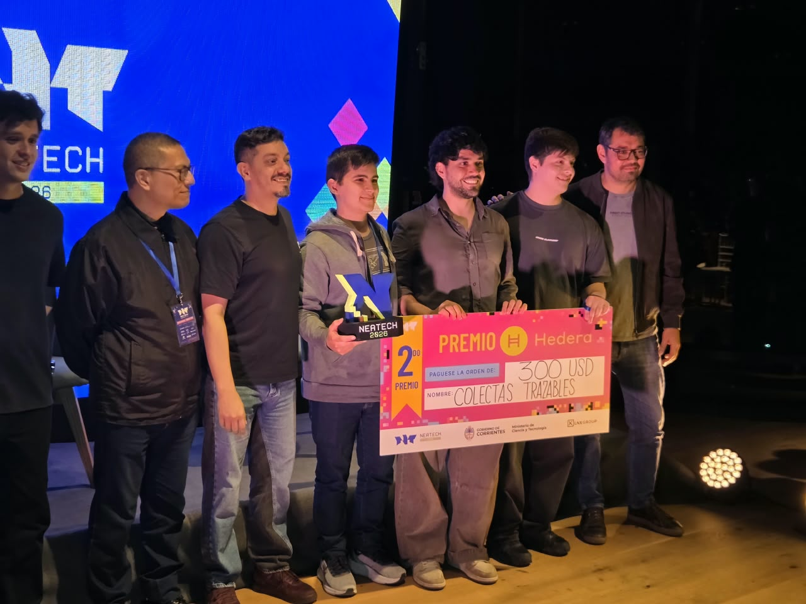
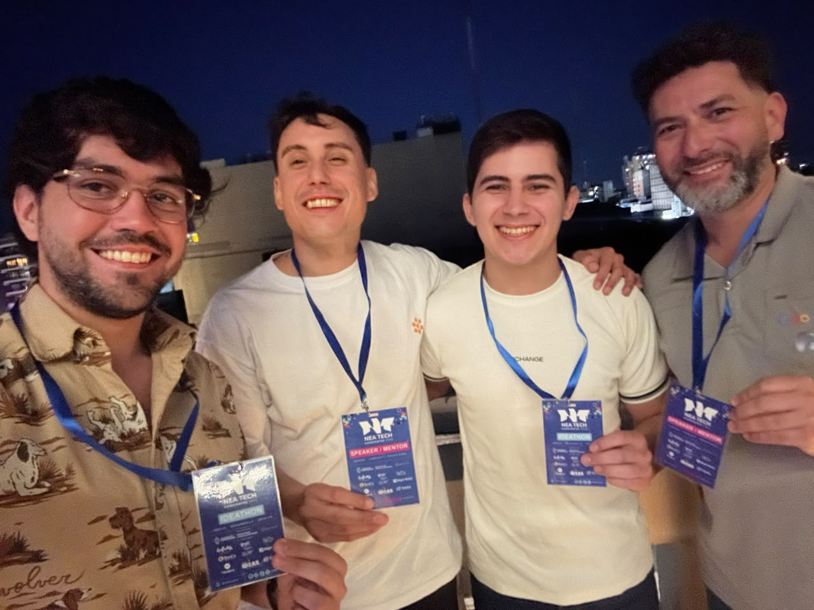
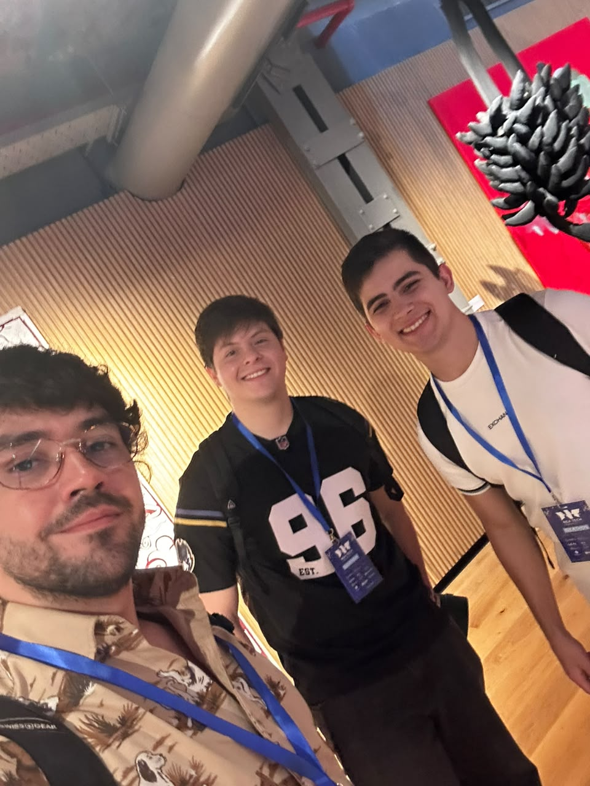

2° Premio Hedera · NEA Tech 2026
Colectas Trazables
Colectas para emergencias donde cada donación y cada gasto quedan registrados en blockchain (Hedera). Cualquiera puede verificar adónde va la plata y nadie puede borrar ni editar el registro.
- De la idea a la demo en vivo en 5 días (96 commits)
- Demo, pitch deck y video de 1 minuto entregados
- Blockchain aplicado a un problema real, de punta a punta, en una semana
Hedera
Blockchain
Hackatón